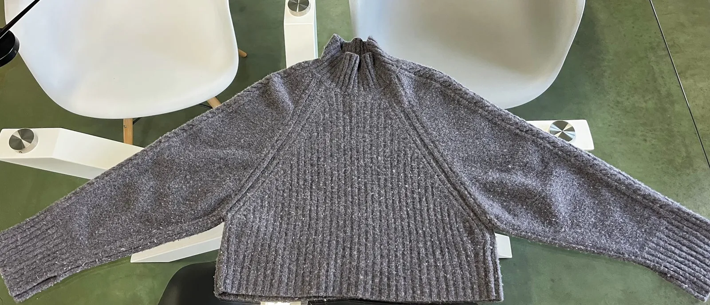
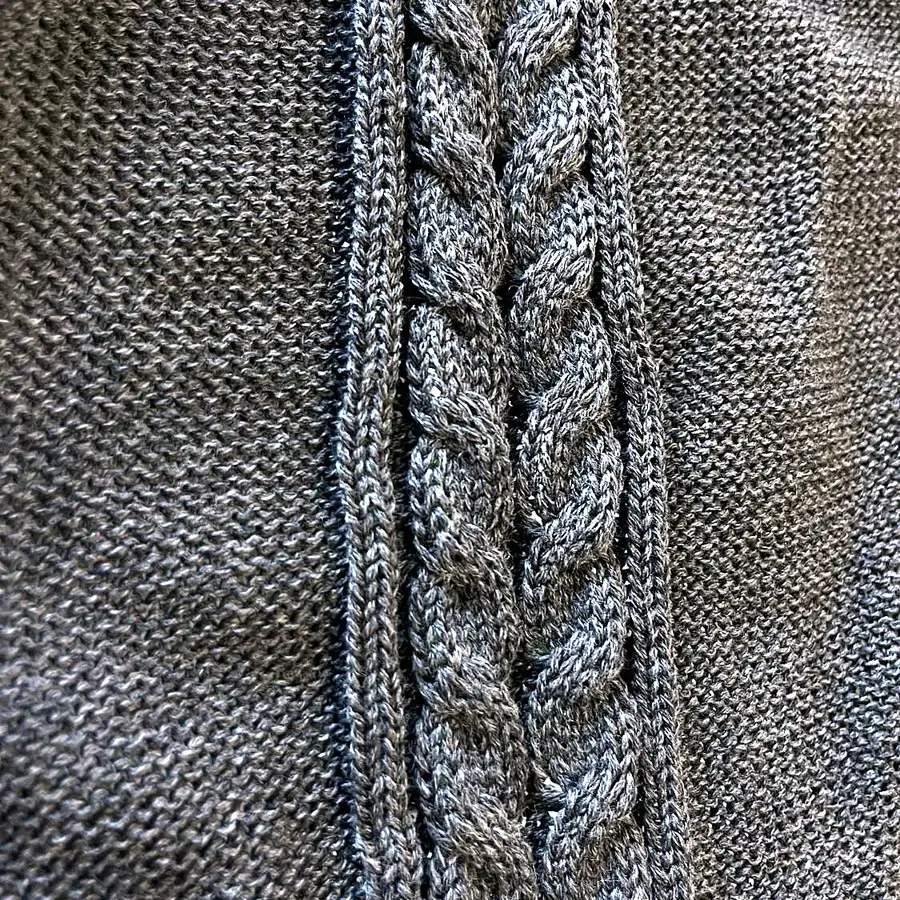
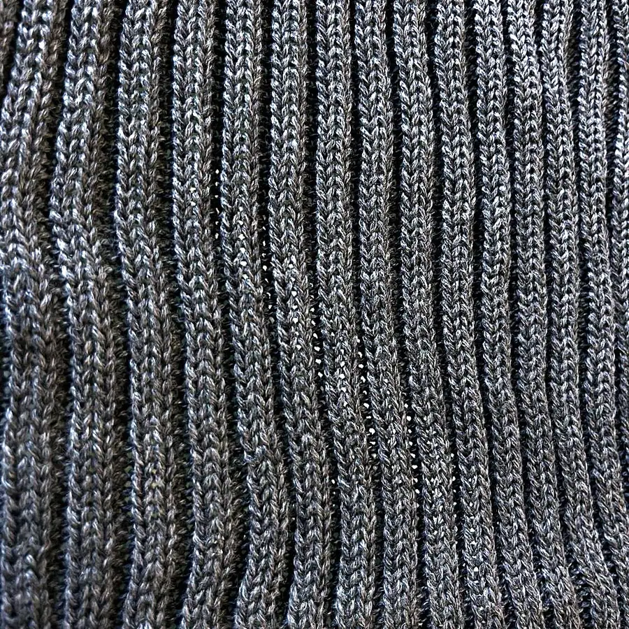
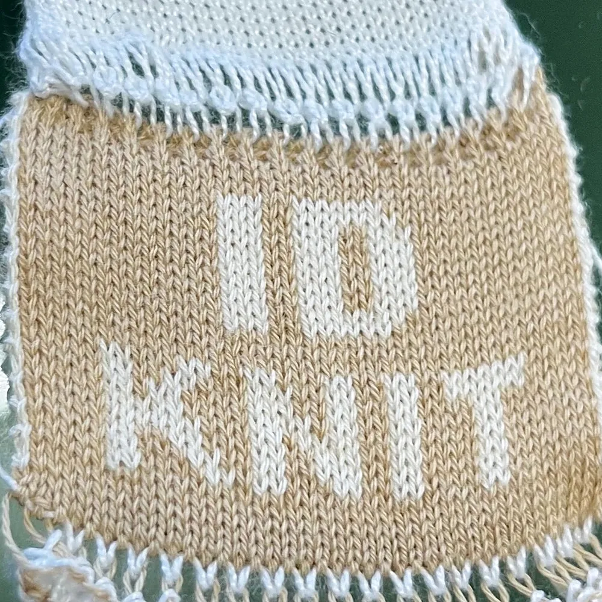
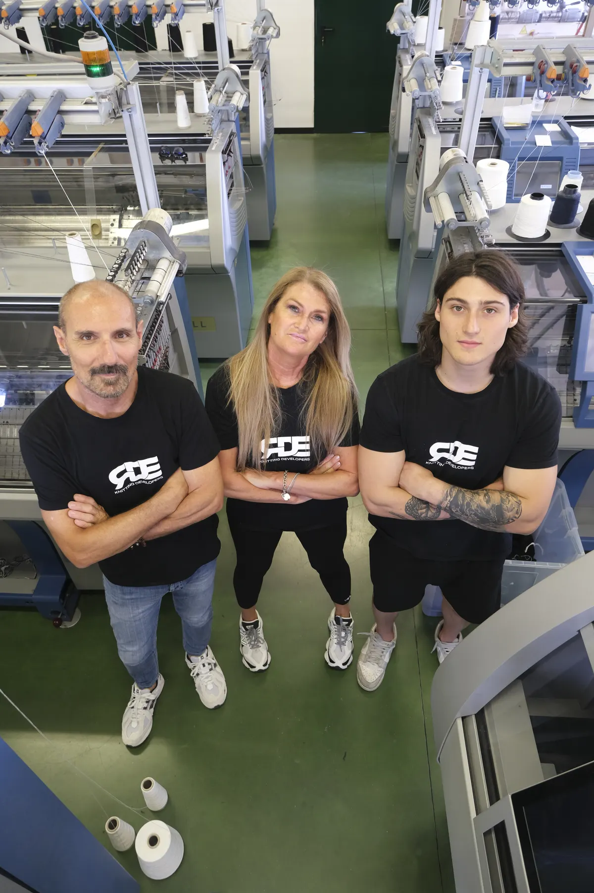

01
Lo programmiamo
Ogni maglia disegnata a schermo, punto per punto.

“Studio”Identify yourself in our knitwear
Maglieria tessuta punto per punto nel nostro laboratorio in Italia. Pochi pezzi, un’identità precisa.
Identify yourself
Scrivi il tuo nome: il carro lo tesse rango dopo rango, come facciamo con l’etichetta cucita nel collo di ogni capo.
Il capo · 01

Tocca i numeri
Sale morbido e resta in piedi da solo.
La cucitura parte dal collo: spalla libera, linea pulita.
Dalla spalla al polso, tessuta nel telo — non applicata.
Coste verticali che slanciano; dietro, maglia rasata.
Cropped in vita, largo sulle braccia: la forma è tutta lì.



Dietro il capo
Ogni maglia disegnata a schermo, punto per punto.
Sui nostri telai, un telo alla volta.
Controluce, sotto la lente. Se non è perfetto non parte.

Un laboratorio di maglieria a Montagnana, provincia di Padova. Dal 1985 tessiamo per le case di moda; ID KNIT è quello che facciamo quando il nome sul capo è il nostro.
100% Made in Italy